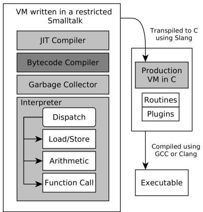
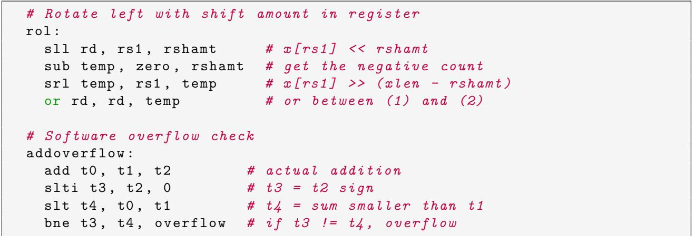
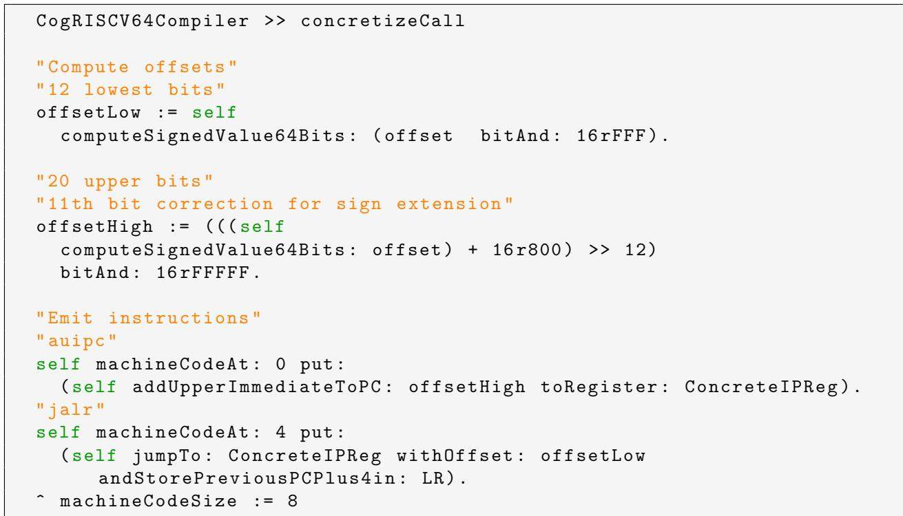

Porting a JIT Compiler to RISC-V: Challenges and Opportunities 图表详解¶
Figure 1: Slang VM transpilation.¶

- 图片展示了 Pharo VM 的 Slang transpilation 流程，核心是将用受限 Smalltalk 编写的 VM 源码转换为 C 语言代码。
- 整个流程分为左右两部分：左侧为 Smalltalk 环境中的 VM 组件，右侧为 C 语言编译与执行流程。
- 左侧组件自上而下包括：
- JIT Compiler
- Bytecode Compiler
- Garbage Collector
- Interpreter（包含 Dispatch、Load/Store、Arithmetic、Function Call 四个子模块）
- 右侧流程从左到右依次为：
- Production VM in C（由 Slang 转换而来）
- Routines + Plugins（作为附加模块链接）
- 最终通过 GCC 或 Clang 编译生成可执行文件（Executable）
- 关键连接箭头表明：左侧的整个 VM 架构通过 Slang 工具被“转译”（Transpiled）为 C 语言代码，进入右侧的编译链。
- 此设计允许开发者在 Pharo Smalltalk 环境中直接调试和模拟 VM 行为，无需频繁切换到 C 语言环境，极大提升开发效率。
- 该架构体现了 元循环虚拟机（metacircular VM） 的设计理念：VM 自身用高级语言编写，并能自我模拟和调试。
| 阶段 | 输入 | 处理工具 | 输出 |
|---|---|---|---|
| 开发阶段 | Smalltalk VM 源码 | Slang | C 语言源码 |
| 编译阶段 | C 语言源码 + 插件 | GCC / Clang | 可执行程序 |
- Slang 的作用是限制 Smalltalk 特性（如多态、异常），确保其能正确映射到 C 语言结构，同时保留 VM 的可调试性和可扩展性。
- 此图强调了 开发便利性与生产性能之间的平衡：开发时在 Smalltalk 中高效迭代，发布时通过 C 编译获得高性能。
Figure 2: Cogit compilation phases.¶

- 图片展示了 Cogit JIT 编译器的三阶段编译流程，整体结构清晰，分为 ISA agnostic（与指令集无关）和 Code Generation（代码生成）两大区域。
- 第一阶段为 Bytecode Scanning，目标是从字节码中提取元数据（如方法是否需要栈帧），该阶段不涉及具体架构，属于 ISA agnostic。
- 第二阶段为 Bytecode Parsing，将字节码转换为中间表示 CogRTL IR，同样属于 ISA agnostic，确保前端逻辑独立于目标平台。
- 第三阶段为 Code Generation，负责将 CogRTL IR “具体化”为对应架构的机器码（Concretize IR in Machine Code），这是唯一依赖目标 ISA 的部分，需为每个新架构重写。
- 三个阶段通过箭头串联，形成线性流程：Bytecodes → Bytecode Scanning → Bytecode Parsing → Code Generation → Machine Code。
- 图中虚线框标注了各阶段的目标（Step Objectives），强调每一步的功能边界。
- 整体设计体现了 解耦思想：前两阶段保持通用，仅第三阶段适配不同架构，极大简化了跨平台移植工作。
| 阶段 | 名称 | 是否 ISA 无关 | 主要任务 | 输出 |
|---|---|---|---|---|
| 1 | Bytecode Scanning | 是 | 提取元数据（如栈帧需求） | 元数据 |
| 2 | Bytecode Parsing | 是 | 转换字节码为 CogRTL IR | CogRTL IR |
| 3 | Code Generation | 否 | 将 IR 转换为机器码 | Machine Code |
- 此图是理解 Pharo VM 如何支持多架构的关键，尤其在移植到 RISC-V 时，只需重写第三阶段，前两阶段可复用。
- 图中“Concretize IR in Machine Code”明确指出该阶段是“具体化”，即从抽象 IR 到具体机器指令的映射，是架构差异的核心处理点。
9a08b27be50372f3a6ae6a6fa72ebdd1e30abc4693a6ce41086a653a28a9bfb8.jpg¶

- 图片展示了 CogRTL 中间表示（IR）指令及其在 ARMv8 架构下的机器码生成结果，用于说明条件跳转的编译过程。
- 代码分为两部分：上半部分为 CogRTL IR 指令，下半部分为对应的 ARMv8 输出。
- CogRTL 指令 包含两条：
cogit CmpR: ClassReg R: TempReg：比较类寄存器与临时寄存器。cogit JumpNonZero: (Label 2).：若比较结果非零，则跳转到标签 2。
- ARMv8 输出 对应两条汇编指令：
cmp r1, r22：比较寄存器 r1 与 r22，其中注释说明 r1 和 r22 分别对应 ARMv8 的 class/temp 寄存器。b.ne 48：若不相等则跳转，偏移量为 48，注释指出标签 2 的偏移为 48。
- 此示例体现 一比一映射 特性：CogRTL 的每条 IR 指令直接对应一条 ARMv8 机器指令，无需额外处理或重写。
- 该映射依赖于 ARMv8 支持 条件码标志位，即
cmp指令隐式设置状态标志，后续b.ne根据标志位决定是否跳转。 - 与 RISC-V 的对比中，此映射方式无法直接复用，因 RISC-V 不提供条件码，需通过组合指令实现类似逻辑。
- 下表总结关键指令映射关系：
| CogRTL IR 指令 | ARMv8 机器码 | 说明 |
|---|---|---|
CmpR: ClassReg R: TempReg |
cmp r1, r22 |
比较两个寄存器，设置条件标志 |
JumpNonZero: (Label 2) |
b.ne 48 |
根据标志位跳转，偏移 48 |
- 此图作为论文第 3.1 节“中间表示不匹配”的例证，突出 RISC-V 与 x86/ARM 在条件分支处理上的根本差异。
2ebc0cac7ecfd21c8d87ef4b86d873d71b66937dfdec5776e7fe04bbe97d43a6.jpg¶

-
该图片展示了一段 Smalltalk 代码，属于 Pharo VM 的 Cogit JIT 编译器，具体为
CogCompiler >> noteFollowingConditionalBranch:方法的实现。 -
此方法的核心功能是处理 RISC-V 架构下无条件码的分支指令生成问题。它通过“向后看”（look-ahead）的方式，将原本依赖隐式标志位的 IR 指令序列（如
CmpRR+JumpZero）重写为 RISC-V 原生支持的显式比较跳转指令（如BrEqualRR）。 -
代码逻辑分为三个主要部分：
- 提取下一个指令的操作码：根据
nextInstruction的操作码（如JumpZero,JumpNonZero），映射到对应的 RISC-V 分支操作码（如BrEqualRR,BrNotEqualRR）。 - 提取当前指令的操作数：根据当前指令的操作码（如
CmpRR,CmpCqR），提取用于比较的源操作数，并可能引入临时寄存器（TempReg）来处理立即数。 - 重写指令序列：将原指令序列替换为新的、符合 RISC-V 规范的指令，并返回修改后的
nextInstruction。
- 提取下一个指令的操作码：根据
-
关键变量与操作说明：
| 变量/操作 | 作用 |
|---|---|
newBranchOpcode |
根据后续跳转指令确定最终要生成的 RISC-V 分支操作码。 |
newBranchLeft, newBranchRight |
存储用于比较的左、右操作数。 |
opcode := Label |
将原 CmpRR 指令标记为 Label，使其在后续阶段被忽略或移除。 |
MoveCqR |
当遇到 CmpCqR 时，先将立即数移动到临时寄存器 TempReg 中。 |
rewriteOpcode:with:with: |
执行核心的指令重写操作，将 nextInstruction 替换为新的分支指令。 |
- 代码中使用了 Smalltalk 的
caseOf:语法进行模式匹配，体现了其面向对象和消息传递的特性。 - 注释
"Opcode extraction from the next instruction"和"Operands extraction from the current instruction"清晰地标明了代码的两个关键步骤。 - 最后一行
^ nextInstruction表示方法返回被重写后的指令对象，供后续的机器码生成阶段使用。 - 此设计避免了为 RISC-V 重新定义整个 CogRTL IR，而是通过在汇编阶段增加一个预处理步骤来解决架构差异，是一种典型的“适配层”解决方案。
988a85933dbf9e32d0a401304b81615aa7ae2862f1eb32096eeb0d866d07825c.jpg¶

- 图片展示了 RISC-V 架构下两个典型操作的软件模拟实现：左移旋转（
rol）和加法溢出检查（addoverflow），体现了 RISC-V 通过简单指令组合替代复杂指令的设计哲学。 - 左移旋转
rol实现：- 使用四条 RISC-V 指令完成，无专用
rol指令。 - 第一步
sll rd, rs1, rshamt：将源寄存器rs1左移rshamt位，结果存入目标寄存器rd。 - 第二步
sub temp, zero, rshamt：计算负的移位量，用于后续右移。 - 第三步
srl temp, rs1, temp：将rs1右移(xlen - rshamt)位，结果存入临时寄存器temp。 - 第四步
or rd, rd, temp：将前两步结果进行按位或运算，完成旋转。
- 使用四条 RISC-V 指令完成，无专用
- 软件溢出检查
addoverflow实现：- 通过比较操作数与结果的符号位变化来判断溢出。
- 第一步
add t0, t1, t2：执行实际加法，结果存入t0。 - 第二步
slti t3, t2, 0：获取第二个操作数t2的符号位（0 或 1）。 - 第三步
slt t4, t0, t1：比较结果t0是否小于第一个操作数t1。 - 第四步
bne t3, t4, overflow：若符号位与大小关系不一致，则跳转至overflow标签，表示发生溢出。
- 该图示例说明了 RISC-V 的设计权衡：牺牲单指令效率换取硬件简化，将复杂性转移至编译器或运行时。
- 下表总结了两个操作的指令序列及其功能：
| 操作 | 指令序列 | 功能描述 |
|---|---|---|
rol |
sll, sub, srl, or |
通过移位和逻辑或组合实现左旋 |
addoverflow |
add, slti, slt, bne |
通过符号位与大小比较检测有符号整数加法溢出 |
- 这些实现方式在 RISC-V 中是常见模式，尤其在未启用 B 扩展（含
rol指令）或未提供硬件溢出标志的情况下。
475a4001aab7301a4beeae96db5252a6aa8e77127d30fe368aa85b8acc650584.jpg¶

-
该图片展示了 Pharo VM 中
CogRISCV64Compiler类的concretizeCall方法实现，用于将中间表示（IR）中的“调用”指令转换为 RISC-V 64 位机器码。 -
此方法的核心挑战在于处理 RISC-V 的 PC 相对寻址和符号扩展机制，因为直接跳转目标地址可能超出单条指令的立即数范围。
-
方法逻辑分为三个主要阶段：计算偏移量、修正符号扩展、发射机器指令。
-
计算偏移量阶段：
- 首先提取目标地址与当前程序计数器（PC）之间的差值（即
offset）。 - 将该差值拆分为两部分：
- 低12位 (
offsetLow)：通过bitAnd: 16rFFF获取，用于jalr指令的立即数字段。 - 高20位 (
offsetHigh)：通过右移12位并进行符号扩展修正后获取，用于auipc指令。
- 低12位 (
- 首先提取目标地址与当前程序计数器（PC）之间的差值（即
-
符号扩展修正阶段：
- 关键步骤是 “11th bit correction for sign extension”。
- 由于
jalr指令的12位立即数字段在使用时会进行符号扩展，如果原始偏移量的第11位为1，则会导致错误的符号扩展。 - 修正方法是：在右移前向
offset加上16r800（即 2048），确保当第11位为1时，右移后的高位能正确反映符号。 - 最终结果再通过
bitAnd: 16rFFFFF截取为20位。
-
发射机器指令阶段：
- 使用
auipc指令加载高20位到寄存器ConcreteIPReg（通常是x1，即ra寄存器）。 - 紧接着使用
jalr指令，以ConcreteIPReg为基址，加上低12位偏移量，并将返回地址存入LR（链接寄存器）。 - 整个过程生成两条指令，总长度为8字节（
machineCodeSize := 8）。
- 使用
-
关键数据表：
| 步骤 | 操作 | 目的 |
|---|---|---|
| 1 | offsetLow := self computeSignedValue64Bits: (offset bitAnd: 16rFFF) |
提取低12位，用于 jalr 的立即数。 |
| 2 | offsetHigh := (((self computeSignedValue64Bits: offset) + 16r800) >> 12) bitAnd: 16rFFFFF |
修正第11位符号扩展问题，提取高20位，用于 auipc。 |
| 3 | self machineCodeAt: 0 put: (self addUpperImmediateToPC: offsetHigh toRegister: ConcreteIPReg) |
发射 auipc 指令，加载高20位。 |
| 4 | self machineCodeAt: 4 put: (self jumpTo: ConcreteIPReg withOffset: offsetLow andStorePreviousPCPlus4in: LR) |
发射 jalr 指令，完成跳转并保存返回地址。 |
- 此实现体现了 RISC-V 架构设计哲学：通过简单指令组合实现复杂功能，而非提供单一复杂指令。
- 该方法是 JIT 编译器中处理跨模块或动态调用的关键环节，其正确性直接影响程序执行流。
- 符号扩展修正逻辑是 RISC-V 特有的工程细节，凸显了从 x86/ARM 移植 JIT 编译器时面临的底层架构差异。
2510b3040a23551d3f63aacf485cbf0d54c80111473b6b41a9cb854d3a648462.jpg¶

- 图片展示了 RISC-V 汇编中
li（load immediate）伪指令在不同场景下的实际展开过程，体现了 RISC-V 在处理大立即数时的复杂性。 - 核心问题：RISC-V 为简化硬件设计，不提供直接加载 64 位立即数的单条指令，而是通过组合
lui、addi、slli等基础指令来实现。 - 第一个例子是加载一个密集型大立即数
0x7FFF800800800800到寄存器t0。该值无法用一条指令表示，因此被分解为一系列操作：- 首先使用
lui加载最高 20 位（32768对应0x8000）。 - 接着通过多次
addiw和slli组合，逐步填充低位并修正符号扩展带来的偏差（如-2047、-2048）。 - 最终通过 8 条指令完成加载，体现了“从高位到低位”递归构建的策略。
- 首先使用
| 步骤 | 指令 | 作用 |
|---|---|---|
| 1 | lui t0, 32768 |
加载高 20 位 (0x8000) |
| 2 | addiw t0, t0, -2047 |
修正低 12 位并移位 |
| 3 | slli t0, t0, 12 |
左移 12 位 |
| 4 | addi t0, t0, -2047 |
再次修正并移位 |
| 5 | slli t0, t0, 12 |
左移 12 位 |
| 6 | addi t0, t0, -2047 |
再次修正并移位 |
| 7 | slli t0, t0, 12 |
左移 12 位 |
| 8 | addi t0, t0, -2048 |
最终修正得到目标值 |
-
第二个例子是加载一个稀疏型立即数
0x70000000000007FF，其有效位集中在高位和低位。- 编译器优化后仅需 3 条指令：
addi初始化为7，slli左移 60 位，再addi加上2047（即0x7FF）。 - 这种情况显著减少了指令数量，说明 RISC-V 的立即数加载逻辑会根据数值的“稀疏性”进行优化。
- 编译器优化后仅需 3 条指令：
-
关键术语保留：
li,lui,addi,slli,addiw均为 RISC-V 标准指令或伪指令。 -
设计哲学体现：这种展开机制反映了 RISC-V “硬件极简、软件补偿”的设计理念，将复杂性转移至编译器层面。
-
对 JIT 编译器的影响：在 Cogit 这类 JIT 编译器中，此类展开意味着一个简单的
li操作可能膨胀为多达 8 条机器指令，增加了代码体积和 patching 复杂度。 -
解决方案提示：论文中提到的“out-of-line literals”策略可规避此问题——将大常量存入内存，通过
auipc+ld两条指令访问，从而避免复杂的立即数展开。
Figure 3: Inline and out-of-line literals.¶

- 图片展示了 Pharo VM 中两种处理字面量（Literals）的策略：Inline literals 与 Out-of-line literals，用于解决 RISC-V 架构下立即数加载的复杂性。
- 左侧为 Inline literals 模式：
- 字面量直接嵌入生成的机器码中。
- 适用于小数值（如 ≤12位），可被单条指令容纳。
- 对于大数值，需拆分为多条指令（如
lui+addi+slli等），可能导致代码膨胀。
- 右侧为 Out-of-line literals 模式：
- 字面量被集中存储在独立区域（类似
.data段），机器码中仅保留指向它们的引用。 - 引用通过固定长度指令序列（如
auipc+ld）访问，始终占用 两条指令。 - 由 Literals Manager 统一管理字面量位置与引用更新。
- 字面量被集中存储在独立区域（类似
- 两种模式对比：
| 特性 | Inline Literals | Out-of-line Literals |
|---|---|---|
| 存储位置 | 嵌入机器码中 | 独立内存区域 |
| 访问方式 | 直接使用立即数 | 通过 PC-relative 地址加载 |
| 指令开销 | 小数值：1条；大数值：最多8条 | 固定2条（auipc + ld） |
| 代码膨胀风险 | 高（尤其大立即数） | 低（字面量集中存储） |
| 补丁/重定位支持 | 复杂（需重新生成多条指令序列） | 简单（只需更新字面量内容或引用） |
| Pharo 实现名称 | InlineLiteralsCompiler | OutOfLineLiteralsCompiler |
- 在 Pharo 的 Cogit 编译器中，当字面量超过 12位 时，自动切换至 Out-of-line literals 模式，以规避 RISC-V 立即数扩展的复杂逻辑。
- 此设计显著简化了 代码修补（Code patching） 流程，尤其在 JIT 运行时动态更新调用目标或内联缓存时，避免因立即数重编码导致的指令序列重构。